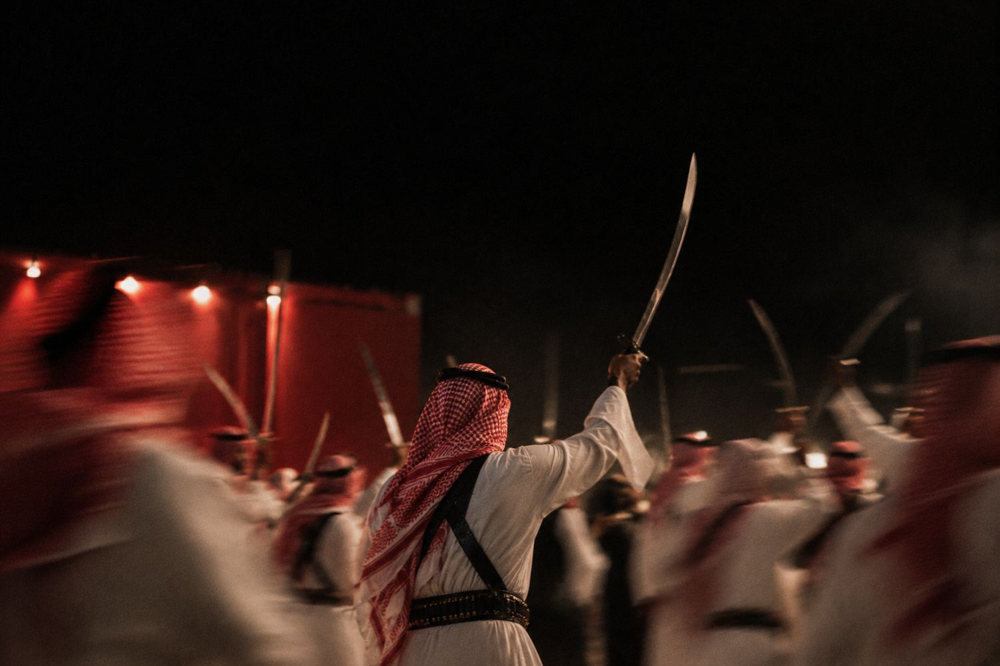

العرضة: لما يصير الشعر خطوة
كيف صارت العرضة النجدية أول عنصر سعودي منفرد في قائمة اليونسكو للتراث غير المادي، ووش معنى اسمها.
صباح الخير ☕ صفين متقابلين، وسيوف مرفوعة، وطبول في النص، وشاعر يرمي البيت والصفوف تردده. أكيد شفتوا العرضة. لكن هل تعرفون ليش اسمها كذا، ووش اللي خلاها تراث عالمي؟
- العرضة النجدية تجمع ثلاث فنون: الرقص، وقرع الطبول، والشعر.
- في 2015 صارت أول عنصر سعودي منفرد في قائمة اليونسكو للتراث غير المادي.
- وهي وحدة من 16 عنصر سعودي في القائمة اليوم، منفردة أو مشتركة مع دول ثانية.
الحكاية
العرضة فن جماعي يؤدى في الأعياد والمناسبات الوطنية والاحتفالات. صفين من الرجال يحملون السيوف، وفي المنتصف حاملي الطبول، وشاعر يلقي أبيات يرددها الصف بإيقاع ثابت مع حركة السيوف. وتاريخياً، كانت مرتبطة بالاستعداد والحماسة والفخر بالجماعة.
والاسم يرجع غالباً للفعل «عَرَضَ»، يعني أظهر واستعرض. فالعرضة في أصلها استعراض للصفوف وللوحدة قدام الناس.
العرضة ما تنجح بفرد ماهر. تنجح لما يمشي الصف كله على نفس الإيقاع.
تاريخ في سطور
المملكة تصادق على اتفاقية اليونسكو لصون التراث الثقافي غير المادي (اتفاقية 2003).
تسجيل «العرضة النجدية: رقص وقرع طبول وشعر» في القائمة التمثيلية لليونسكو. أول عنصر سعودي منفرد، وفي نفس السنة تسجيل المجلس والقهوة العربية مع دول خليجية.
المزمار يلحقها كعنصر سعودي منفرد ثاني.
القط العسيري، فن تزيين جدران بيوت عسير، يدخل القائمة.
التراث السعودي في اليونسكو
حسب الموسوعة السعودية، للمملكة 5 عناصر منفردة: العرضة، والمزمار، والقط العسيري، والبن الخولاني، والورد الطائفي. و11 عنصر مشترك مع دول ثانية، منها: المجلس، والقهوة السعودية، والصقارة، ونخيل التمر، والسدو، وحداء الإبل، والخط العربي.
مفردات
سؤال اليوم
وش العنصر التراثي في منطقتكم اللي ما سمعتوا أحد يتكلم عنه، ويستاهل يكون في القائمة؟
المصادر
نشوفكم بكرة الساعة 8 مع جرعة جديدة. يومكم سعيد 🤍
جرعة